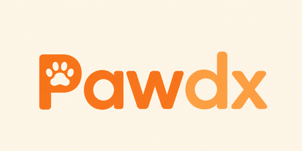

Upload a high-resolution photo or video of the symptomatic area. Our CNN Pathology engine analyzes dermal textures and chromatic shifts.
Supporting JPG, PNG, MP4 (max 50MB)
Place your pet's paw on the circle below. Hold for 10 seconds to capture bio-electrical signatures and pulse rhythm.
Describe the symptoms, behavior changes, or duration of the issue. The AI correlates this with the visual and tactile datasets.